04.30.2009 10:08
Updating ubuntu stuck on a LTS release
I have several machines that passed
through the 8.04 long term support (LTS) release. When in an LTS
release version, Ubuntu does not want to update itself:
% sudo do-release-upgrade Checking for a new ubuntu release No new release foundThe trick is to set the Prompt from lts to normal:
% sudo perl -pi -e 's|Prompt=lts|Prompt=normal|' /etc/update-manager/release-upgradesThen you can go through the normal upgrade process:
% sudo apt-get install update-manager-core % sudo do-release-upgradeIt is interesting to see that the do-release-upgrade is a python script. It takes a '-h' flag for help. One option that it needs is to just answer y or the default to all questions for a fully automated upgrade.
% do-release-upgrade -h
Usage: do-release-upgrade [options]
Options:
-h, --help show this help message and exit
-d, --devel-release Check if upgrading to the latest devel release is
possible
-p, --proposed Try upgrading to the latest release using the upgrader
from $distro-proposed
-m MODE, --mode=MODE Run in a special upgrade mode. Currently 'desktop' for
regular upgrades of a desktop system and 'server' for
server systems are supported.
-f FRONTEND, --frontend=FRONTEND
Run the specified frontend
-s, --sandbox Test upgrade with a sandbox aufs overlay
04.28.2009 18:49
CCOM training - fire fighting
I am bummed I wasn't there to see
this... Today, the students in the CCOM Seamanship class got to
practice fire fighting. I always enjoy when the science crew on
ships is required to practice with the fire hoses. The training is
important and it's fun too!
Fire Safety Training [The Moni-blog]
Fire Safety Training [The Moni-blog]
04.28.2009 14:27
NOAA tides via SMS
Janice just asked me if NOAA tides
are available via mobile text messages. It appears that they are
not offering a text message service. This looks like a fun project,
but not something I have time for. I also don't know how you would
specify where you are looking for tides. The NOAA station codes are
not easy to remember. I suppose that you could use a geocoding
library to guess the nearest station based on a spelled out city,
state. That would mostly work. Should be fairly easy to write the
SMS bridge as there are libraries to interface with AIM via the
OSCAR protocol and that already handles conversations with mobile
numbers.
In other news, a friend reports that JPL has blocked Live Journal. I know that JPL thinks it is helping to reduce drains on productivity, but when organizations block these kinds of tools, they are likely causing themselves harm. I've seen first hand that Live Journal made my most recent work at JPL much more enjoyable. When you work all hours, anything that keeps you connected to people is a very good thing. I urge JPL to think about how to work with the technology to get an overall boost in how well enjoy being a part of the community and general productivity. What's next? Will it be blocking YahooMail/GMail/Hotmail/Facebook or even slashdot? I've had places I work block IRC because "people only use IRC for Warez and botnets." That blocked me from talking to other opensource software developers while at work... definitely not good for my productivity.
In other news, a friend reports that JPL has blocked Live Journal. I know that JPL thinks it is helping to reduce drains on productivity, but when organizations block these kinds of tools, they are likely causing themselves harm. I've seen first hand that Live Journal made my most recent work at JPL much more enjoyable. When you work all hours, anything that keeps you connected to people is a very good thing. I urge JPL to think about how to work with the technology to get an overall boost in how well enjoy being a part of the community and general productivity. What's next? Will it be blocking YahooMail/GMail/Hotmail/Facebook or even slashdot? I've had places I work block IRC because "people only use IRC for Warez and botnets." That blocked me from talking to other opensource software developers while at work... definitely not good for my productivity.
04.27.2009 17:01
Google Lat Long Blog
Update Apr-28:
Two Collections: US Coast Guard and Right Whales [Google Earth
Blog] - note that the database I am using only covers the North
East area of the United States.
Update Apr-27: Monica posted on her blog about this visualization: Right Whales and Healy Now in Google Earth
Thanks to Steve Miller for his post on the Google Lat Long Blog: Right whales, right there
Update Apr-27: Monica posted on her blog about this visualization: Right Whales and Healy Now in Google Earth
Thanks to Steve Miller for his post on the Google Lat Long Blog: Right whales, right there
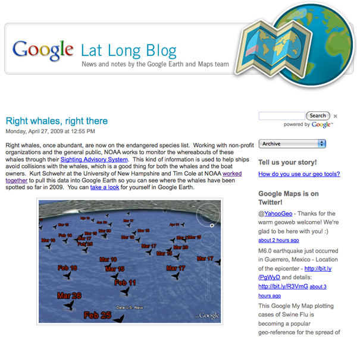
04.27.2009 07:20
Andy Norris on AIS Binary Messages
The May
09 Digital Ship has an article from Andy Norris about AIS and
it's potential. In the article, he worries about viruses causing
trouble over the pilot port:
Next, I forget which signal type runs on a pilot port (RS-232, 422, 488), but just provide the computer with the listening lines. Any device so connected can hear all of the NMEA scentences, but can not cause trouble. Or someone can grab a small embedded computer and write some quick NMEA filtering code. Then route the connection through the two serial ports. This is the same idea as firewalls for computers.
Finally, I have to remind vendors and authorities that produce software - there are more secure platforms than Windows. OpenBSD is probably the most secure operating system generally available. If that is too unusual for you, consider Linux with tools like App Armor. I leave Linux and mac boxes on the internet (often without a firewall) all the time and haven't had a virus in 7 years. The design of these operating systems is fundamentally different than Windows.
With Linux, you can easily built and lock down a system that matches only the functionality you need for your application. It gives you total control and the ability to audit any part of the system without having to get permission.
Secondly, can a computer virus be designed to propagate through the Pilot Port? This port is a two way interconnection into the navigation network and therefore it would be possible for a connected computer to feed corrupt data into the network. It is certainly possible to dream up relatively simple viruses that would achieve this mischievously. Such viruses could potentially enter the computer by poor IT practices, perhaps when not connected to the Pilot Port and being used for other applications. ... All possibilities of harm could in fact be prevented if an adaptor box was specifically designed to prevent the computer connected to the Pilot Port from feeding any data onto the network.I have a couple of thoughts on this. First, if we had a standardize machine readable language to define AIS Binary Messages (see my XML papers), then vendors would have an easier time adding new messages to their software.
Next, I forget which signal type runs on a pilot port (RS-232, 422, 488), but just provide the computer with the listening lines. Any device so connected can hear all of the NMEA scentences, but can not cause trouble. Or someone can grab a small embedded computer and write some quick NMEA filtering code. Then route the connection through the two serial ports. This is the same idea as firewalls for computers.
Finally, I have to remind vendors and authorities that produce software - there are more secure platforms than Windows. OpenBSD is probably the most secure operating system generally available. If that is too unusual for you, consider Linux with tools like App Armor. I leave Linux and mac boxes on the internet (often without a firewall) all the time and haven't had a virus in 7 years. The design of these operating systems is fundamentally different than Windows.
With Linux, you can easily built and lock down a system that matches only the functionality you need for your application. It gives you total control and the ability to audit any part of the system without having to get permission.
04.26.2009 15:32
GAO Report on Maritime Security - AIS and LRIT
The US Government Accountability
Office has released GAO-09-337: MARITIME SECURITY: Vessel
Tracking Systems Provide Key Information, but the Need for
Duplicate Data Should Be Reviewed. This is the April release of
a classified March version. This is the first that I've heard about
this study. Thanks to Mark Friese for the info.
On April 20th, the USCG iCommandant blog has a post by Dana Goward indirectly responding to the GOA report: Maritime Domain Awareness -- The Whole is Greater than the Sum of its [parts] [title is clipped]:
I'm just starting to read through the 54 page GAO report and have some observations and speculation. Remember, I do not and never have had a security clearance above a "National Access Check (NAC)" and that was with NASA. I've been in the Seattle VTS center, but not in the classified area.
On page one, the GAO states:
I'm wondering what this "national technical means" is such that they can't say what it might be. A quick speculation of what it might be starts with the platforms that might be in use:
The report talks about using radar (possibly implying ground based traditional radar), video cameras, and Notice of Arrival sent by vessels as ways that vessels are tracked. Here are some remote sensing techniques that might be in use:
Also not mentioned in the report are VOS and AMVER systems where vessel have been self reporting locations for a long time. A ways down in the report, they hint at what they are hiding:
Also, I found this quote interesting. Based on what I see in AIS feeds, we need better monitoring right now for anomalies.
On April 20th, the USCG iCommandant blog has a post by Dana Goward indirectly responding to the GOA report: Maritime Domain Awareness -- The Whole is Greater than the Sum of its [parts] [title is clipped]:
... Two of the means the Coast Guard is pursuing to enhance our awareness of the maritime domain are the Automatic Identification System (AIS) and global Long Range Identification Tracking (LRIT). I want to address the inaccurate arguments suggesting these systems are not being properly coordinated and their capabilities are redundant. While AIS and LRIT are complementary, they provide different types of information, apply to different classes and sizes of vessels, and are being developed under separate statutory and international mandates. LRIT, which became mandatory on 01 January 2009 for passenger vessels and cargo vessels over 300 gross tons conducting international voyages, is a mandated system by the International Maritime Organization (IMO). AIS will be required for most vessels over 65ft in U.S. waters and was mandated by the Congress under the Maritime Transportation Security Act of 2002. It is also a global system required under the International Safety of Life at Sea (SOLAS) convention. ...The whole vessel tracking and security issue is timely and many others are talking about it. For example, NavGear just had an article, Vessel tracking system roundup, that talks about other ways to track vessels.
I'm just starting to read through the 54 page GAO report and have some observations and speculation. Remember, I do not and never have had a security clearance above a "National Access Check (NAC)" and that was with NASA. I've been in the Seattle VTS center, but not in the classified area.
On page one, the GAO states:
For tracking vessels at sea, the Coast Guard uses existing national technical means-classified methods of tracking vessels-and plans to obtain vessel identification and tracking information from two more sources, long-range identification and tracking system (LRIT), and commercially provided long-range automatic identification system (AIS).(emphasis added)
I'm wondering what this "national technical means" is such that they can't say what it might be. A quick speculation of what it might be starts with the platforms that might be in use:
- Spacecraft
- Aircraft (manned and unmanned; planes, helocopters, blimps, balloons, kites)
- Ships - both patrol and vessels of opportunity
- Buoys
- Offshort platforms
- Shore stations
- Submarines
- ROV/AUV underwater vehicles and autonmous surface vessels
- Moorings in the water column
- Sea floor stations
- Spotters and other human intelligence at ports foreign and domestic
- Communication taps (e.g. internet, phone, and other data streams) NSA style
The report talks about using radar (possibly implying ground based traditional radar), video cameras, and Notice of Arrival sent by vessels as ways that vessels are tracked. Here are some remote sensing techniques that might be in use:
- Space based radar, thermal, and visual band imaging
- Radio direction finding
- Acoustic receivers - e.g. SOSUS
- Close up thermal imaging of vessels - to guesstimate intention
- Grabbing position and data from Cell phone and other communications
- Magnetometers
Also not mentioned in the report are VOS and AMVER systems where vessel have been self reporting locations for a long time. A ways down in the report, they hint at what they are hiding:
The United States' history of using national technical means for remote tracking of vessels on the high seas goes back many years, but at the time Soviet warships-rather than commercial vessels-were the target of this tracking. Such means have been continually in place since that time, but their mission has grown from tracking potential military adversaries to tracking a wide variety of vessels, both military and nonmilitary, that are of interest to the United States.I'm less than half way through the report. I have lots of questions. For example, I am confused as to what they mean by "commercially provided long-range AIS." How is that different from N-AIS?
Also, I found this quote interesting. Based on what I see in AIS feeds, we need better monitoring right now for anomalies.
The Coast Guard is developing software programs for tracking the expected activity of a port over time and warning the Coast Guard when unexpected activity occurs, but according to Coast Guard officials, such programs will take years to be fully operational.
04.26.2009 08:57
USCG Google Earth Layer
I did the USCGC Healy Aloftcon
visualization for the USCG Google Earth layer. Here is the
announcement and the entry in the Google Earth Outreach
section.
Wednesday, April 22, 2009 - Google Earth Outreach -- U.S. Coast Guard Environmental StewardshipEfforts
Author: United States Coast Guard
I like their spill icon...
Wednesday, April 22, 2009 - Google Earth Outreach -- U.S. Coast Guard Environmental StewardshipEfforts
Coast Guard Google Layer Originally uploaded by icommandant Guest post by VADM David Pekoske, Pacific Area Commander: For the past month, the Coast Guard has been providing information to Google on ways to better inform and engage the public in its many missions. Today, Earth Day 2009, Google will publish a gallery of environmental layers within the Oceans layer of Google Earth, Google Maps Version 5.0, highlighting environmental stewardship activities of groups around the world. The Coast Guard will proudly be featured in this gallery. This layer lets you view descriptions and photographs of Coast Guard efforts to protect and conserve the environment in the Pacific including environmental response, energy conservation, marine debris cleanups, fisheries and sanctuary enforcement, polar operations and wildlife conservation initiatives. Via this layer, you can follow along the Coast Guard Cutter HEALY's Arctic Deployment and view hourly position and webcam footage. You can also explore and learn about recent Coast Guard responses and initiatives from efforts to prevent vessel strikes of whales in the Santa Barbara Shipping Channel to an overview of Training Center Petaluma's planned solar array--the Coast Guard's first power purchase agreement ever!Earth Outreach KML: U.S. Coast Guard Environmental Stewardship Efforts
Author: United States Coast Guard
The U.S Coast Guard is a maritime, multi-mission, military service within the Department of Homeland Security and one of the nation's five armed services. The U.S. Coast Guard is also a strong environmental steward and this layer showcases Coast Guard efforts to protect and conserve the environment in the Pacific including environmental response, energy conservation, marine debris cleanups, fisheries and sanctuary enforcement, polar operations and wildlife conservation initiatives. Come explore the Coast Guard and learn how to assist them in protecting the environment by providing direct feedback on illegal fishing, pollution, and issues relevant to Coast Guard missions!
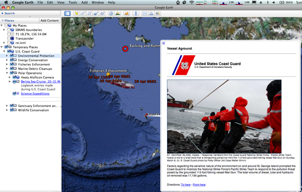
I like their spill icon...
04.25.2009 09:50
Ubuntu 9.04
I've got my first machine up to 9.04.
This one started at 7.10 and had some real troubles on release day
getting to 8.10 and locked up when trying to reboot the machine
after it finished updating all the deb packages. However,
yesterday, it went from 8.10 to 9.04 without any trouble. Took
about 3-4 hours to do the update. All I had to do was run
"do-release-upgrade" and wait to get a jaunty
Linux hostname 2.6.28-11-generic #42-Ubuntu SMP Fri Apr 17 01:57:59 UTC 2009 i686 The programs included with the Ubuntu system are free software; the exact distribution terms for each program are described in the individual files in /usr/share/doc/*/copyright. Ubuntu comes with ABSOLUTELY NO WARRANTY, to the extent permitted by applicable law. To access official Ubuntu documentation, please visit: http://help.ubuntu.com/ System information as of Sat Apr 25 09:40:01 EDT 2009 System load: 0.0 Memory usage: 11% Processes: 133 Usage of /: 3.7% of 226.36GB Swap usage: 0% Users logged in: 1 Graph this data and manage this system at https://landscape.canonical.com/ 0 packages can be updated. 0 updates are security updates. Last login: Fri Apr 24 17:13:53 2009 from some.other.hostAsking the box about itself, here is what I see:
% cat /etc/lsb-release DISTRIB_ID=Ubuntu DISTRIB_RELEASE=9.04 DISTRIB_CODENAME=jaunty DISTRIB_DESCRIPTION="Ubuntu 9.04"Today, things are going much faster. The updates for the next box are going at 300 to 1000kB/s.
04.24.2009 16:48
USCG Photography
Luke Pinneo has some really nice
photos of the USCG. Google
Image Search. e.g. this USCG released image:
04.24.2009 11:46
Norfolk vessel traffic
For the talk that Brian Calder and I
are giving today, I've been building a Google Earth visualization
of the Norfolk/Hampton Roads vessel transits from AIS. There is a
good bit of hand tweaking to get all the colors set right. This
covers Oct and Nov of 2008. The unlabeled yellow edged boxes are my
regions around the k-means estimate of the clusters of vessel end
points. The white line is the bounds of our study area in the US
Hydro paper. There is a lot of occlusion of other traffic by the
orange tug transit lines.
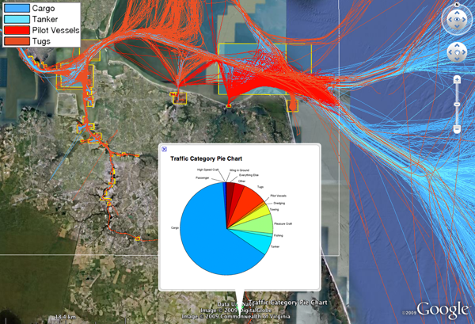
04.24.2009 07:32
Small vessels interacting with large
Coast Guard Urges Recreational Boaters to Be Aware of Boating
Safety Laws [USCG]
SAN PEDRO, Calif. -In light of recent near misses and the start of the 2009 boating season, the Coast Guard will be increasing the enforcement of small vessel navigation rules. There have been several recent near misses in and around the Ports of Los Angeles and Long Beach which were the direct result of dangerous maneuvers by small craft impeding the movement of large commercial vessels. Reports include small craft impeding port channels, cutting through Pilot Operating Areas, and cutting across the path of large ocean going shipping, all violations of federal regulations. Recreational, commercial fishing, and small passenger vessels must use extra care when transiting in port channels, Pilot Operating Areas, as well as the entire Precautionary Area. The Precautionary Area is a convergence zone for the two major shipping lanes in the Los Angeles and Long Beach area and extends approximately seven nautical miles from the federal breakwater. ...
04.23.2009 22:26
Right whale sightings with time and traffic lanes
Thanks to a Googalite for telling me
how I can set the time slider for a dataset. Before, I cut out the
TimeStamp nodes because the view was coming up with no whales
visible and it was confusing. By adding the gx namespace and
setting an overall view with a gx:TimeSpan, the placemarks open up
and set the time range to show all the whale sightings.
<?xml version="1.0" encoding="UTF-8"?>
<kml xmlns="http://earth.google.com/kml/2.0" xmlns:gx="http://www.google.com/kml/ext/2.2" >
<Document><Folder>
<LookAt>
<gx:TimeSpan>
<begin>2009-01-04</begin>
<end>2009-04-01</end>
</gx:TimeSpan>
<longitude>-70.94</longitude>
<latitude>40.77</latitude>
<altitude>0</altitude>
<range>801077.2</range>
<tilt>37.27</tilt>
<heading>-44.46</heading>
<altitudeMode>relativeToGround</altitudeMode>
</LookAt>
<!-- ... -->
I also added a subset of the S-57 charts from Christin.
% ogr2ogr -f KML traffic-lanes.kml traffic-lanes.shp2009-ne-rightwhale-sightings-with-time.kmz
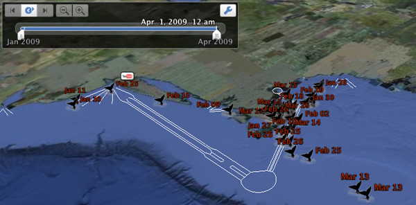
04.23.2009 18:49
Spring
I just missed a really great
picture... if only I had realized that I had a real camera in my
bag while commuting home today.
The flowers are here. The trees have a while to catch up.
The flowers are here. The trees have a while to catch up.
04.23.2009 11:50
Updating Ubuntu Linux for servers
My datalogging boxes and servers all
run Ubuntu. Today, I'm updating
one of our field dataloggers from 7.10 to the latest. However, I
probably picked a bad day to do the updating.. 9.04 was
released today (Ubuntu
9.04 Released [slashdot]), so I'm seeing only 92kB/s on the
update. After many hours I'm still somewhere between 8.04 and 8.10.
I'm seeing 60-150kB/s from a Internet2 IP, so I don't think the
bandwidth problem is at my end.
Some notes on updating....
I had to use the GUI update manager. And it stalled out on on the post-install of locales. About 5 times, I had to do a ps, find the stuck localdef, and kill it. Then I had to reboot afterwards to kill one of the instances that wouldn't respond to any of the 15 signal types I threw at it.
I did some permutation of:
Some notes on updating....
I had to use the GUI update manager. And it stalled out on on the post-install of locales. About 5 times, I had to do a ps, find the stuck localdef, and kill it. Then I had to reboot afterwards to kill one of the instances that wouldn't respond to any of the 15 signal types I threw at it.
I did some permutation of:
sudo apt-get dist-upgrade sudo apt-get update-manager-core sudo do-release-upgrade sudo update-manager -dI got turned around by a custom firewall that was blocking DNS lookups. Points to Lester for being first to guess that it was a firewall problem. But in the process, I'm not sure what finally was the key sequence to doing the upgrades.
04.23.2009 11:31
El Cheapo core logger
Bumped into this photo today...
This was a few years back Feb 2002 when I had no access to a core logger, so I tried to build my own. That's Warren Smith inspecting what I had built. Measuring just magnetic susceptibility with a Bartington device.
This was a few years back Feb 2002 when I had no access to a core logger, so I tried to build my own. That's Warren Smith inspecting what I had built. Measuring just magnetic susceptibility with a Bartington device.
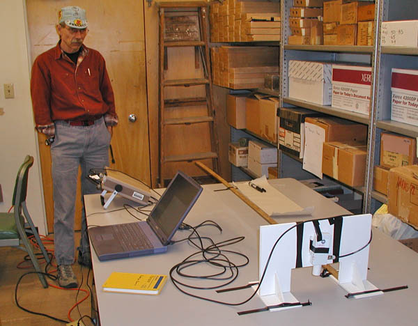
04.23.2009 06:33
GSA Session on Virtual Globes
Peter Selkin just
sent me a note letting me know that the October GSA meeting in
Portland, OR will have a virtual globes sessions.
On Peter's Blog
P6. Google Earth to Geoblogs: Digital Innovations in the Geosciences, Sun., 18 Oct., 1:30-5 p.m.
The usual cast of very interesting research and development folks, plus a couple I don't know.
On Peter's Blog
P6. Google Earth to Geoblogs: Digital Innovations in the Geosciences, Sun., 18 Oct., 1:30-5 p.m.
The usual cast of very interesting research and development folks, plus a couple I don't know.
P. Kyle House, University of Nevada, Reno, Nev. John Bailey, University of Alaska, Fairbanks, Alaska Ronald C. Schott, Fort Hays State University, Hays, Kans. Mano Marks, Google Inc., Mountain View, Calif. Glenn A. Richard, Stony Brook University, Stony Brook, N.Y. Peter A. Selkin, University of Washington, Tacoma, Wash. Digital technologies such as Web 2.0 services, virtual globes, and new applications of digital photography can enhance understanding of geology at all levels and across all disciplines. This session will highlight particularly novel and innovative applications of these technologies.
04.22.2009 23:14
2009 Right Whale sightings
I've been working with Tim Cole at
NOAA on a project to visualize the NE Right Whale sightings. Here
is a KMZ for Google Earth for 2009. This is a static demo that I
will not be updating with new sightings. I've modified the icon a
bit - softening the edges of the splashes - to give a better look
in Google Earth.
2009-ne-rightwhale-sightings-static.kmz
2009-ne-rightwhale-sightings-static.kmz
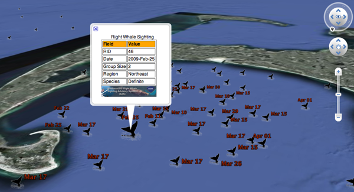
04.22.2009 21:57
Healy sunrise
I'm not on the USCGC Healy, but with
my new GeoRSS feed, it's easy to catch up with the view out the
front of the vessel. This sunrise came across the feed today.
20090422-1601.jpeg
20090422-1601.jpeg

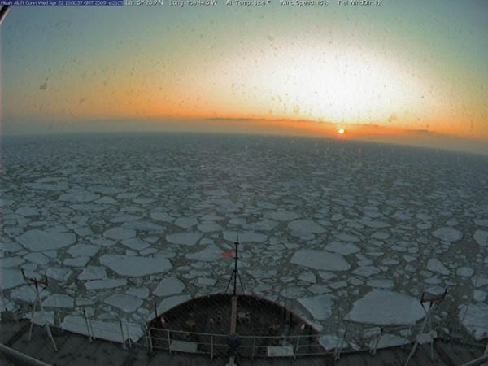
04.22.2009 21:36
Using a layer mask of an image to control transparency
I couldn't figure out how to get
Photoshop to allow me to paste an image into the layer mask in
Photoshop, so I decided it was time to pull out the big guns. I
talked to Joel Hagen and
two minute later I had what I wanted. I've worked with Joel on a
number of spacecraft missions over the last 12 years... Joel is a
master of design with Photoshop. Here is generally what I
did:
First, I started with a photo of a Right Whale tail. I turned the image from color to gray scale. Then I altered the levels by doing Image->Adjust->Levels. I pulled in the two outer bounds of the image and then tweaked the outer bounds to give a mostly black tail, some water highlights, and otherwise white image. I used the eraser to knock down the left over sky artifacts. I used the the blur tool on the water to soften up the deep shadows that I had created. Finally, I touched up the whale to remove the markings that would identify the individual whale.
Then I copied the image to a separate buffer and did Image->Adjustments->Invert. I copied this to the clipboard.
Then I went back to the original layer, made the image RGB and hit the "Add layer mask" icon on the bottom of the Layers view (small red circle). Then I switched over to the Channels view.
Then I had to go to the "Layer 2 Mask", activate the layer to get the eyeball on the left. I then selected the layer so that it was light blue and did a paste.
This shows the process with early on the left and a final on the right.
I might have to do a bit more work for this to come out right in Google Earth, but I am very pleased with the results.
Update: The final result that I used in my Google Earth visualization:
First, I started with a photo of a Right Whale tail. I turned the image from color to gray scale. Then I altered the levels by doing Image->Adjust->Levels. I pulled in the two outer bounds of the image and then tweaked the outer bounds to give a mostly black tail, some water highlights, and otherwise white image. I used the eraser to knock down the left over sky artifacts. I used the the blur tool on the water to soften up the deep shadows that I had created. Finally, I touched up the whale to remove the markings that would identify the individual whale.
Then I copied the image to a separate buffer and did Image->Adjustments->Invert. I copied this to the clipboard.
Then I went back to the original layer, made the image RGB and hit the "Add layer mask" icon on the bottom of the Layers view (small red circle). Then I switched over to the Channels view.
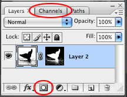
Then I had to go to the "Layer 2 Mask", activate the layer to get the eyeball on the left. I then selected the layer so that it was light blue and did a paste.
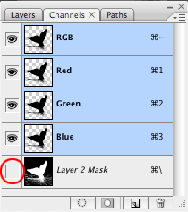
This shows the process with early on the left and a final on the right.
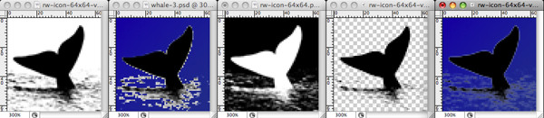
I might have to do a bit more work for this to come out right in Google Earth, but I am very pleased with the results.
Update: The final result that I used in my Google Earth visualization:
04.22.2009 17:06
Friday - Brian and I will give the CCOM seminar
Come join the discussion this Friday
at the CCOM seminar.
04.22.2009 10:12
Right Whale AIS notices - temp outage 1 HR
Update: The server update is finished
and things should be back online.
Cornell is doing some work on their end. The right whale messages for the Boston Approaches will resume in about an hour.
Operations Resume at Excelerate's Northeast Gateway LNG Deepwater Port
Cornell is doing some work on their end. The right whale messages for the Boston Approaches will resume in about an hour.
Operations Resume at Excelerate's Northeast Gateway LNG Deepwater Port
...Reuters reports that Excelerate Energy will begin delivery of an LNG cargo to the Northeast Gateway LNG deepwater port this week. ...
04.21.2009 10:55
Optical Character Recognition (OCR)
Last week, Alex (ACD)
gave me a hand evaluating the potential to pull positions out of
the text written on the Healy Aloftcon images. He suggested looking
at GOCR/JOCR and if that
didn't work, to try tesseract-ocr
I was able to give GOCR a try with moderate success, but don't have the time to look into it more. I started with an aloftcon image: 20090201-1601.jpeg
I was able to give GOCR a try with moderate success, but don't have the time to look into it more. I started with an aloftcon image: 20090201-1601.jpeg

% fink install gocr
% gocr 20090201-1601.jpeg
,' .!Oft CaOnC Sv0C Fb, 01,16,,O,t Ow.p3,,GM0T02,Q,O, 2O,O,?d'^,?'n'>',&?^ aaog 'nd03?9V??,''?'i9? ???v? ,'D?",,? ???i,'c,i,'0t, 0o clq?p6;tgg?,
, , '', ' ..
;'..'i..;î'.',..'oo..?P0'0,,,F,,0,,D'?,,'U0O',,,,,,,',,,,p0,,,,,, ,, , , , ,, ' , ,,,,,,',n,O,0-
:,.,.ti'''.. !,. ', t. . 00 0 0vOnO08c,B' 8 0,8,00,,,,,n8'0'8,,, 00 ,,, , , l, 0,,,p08 '''
' :', ' :'' ''i'r.l?', t. ' ' .l , :, . 08'' ' ...Wr :: '' ,0,,,q, g , ,, , , ' 00'B 0, 8,
...
The first line looks like it might be seeing the text and after
that, it degenerates into interpreting the noise. We then tried
cropping the image and making it gray scale.% gocr gray-crop.jpg =C 00uuu=06i0csJ;000 =000 ci ,v c rW,2,M'-'! er!n,.tr 3;x4XIt probably does not help that there are two different fonts here and that there are substantial JPEG compression artifacts. Croping to just the position that I'd like to parse doesn't really help.
% gocr gray-crop2.jpg , lt,3 e'l,,,,However, thresholding the image has better results, but is not quite there.
% gocr gray-crop3.jpg 48 1 3.C NCloser. Trying to constrain the characters does not appeart to change how it is matching.
% gocr -C "0123456789.NSEW " gray-crop3.jpg 48 1 3. NAnd changing the certainty still does not let it pick up the 0.
% gocr -a 0 -C "0123456789.NSEW " gray-crop3.jpg 48 1 3. NSetting the space width helps with the spacing, but still doesn't get the 0.
% gocr -a 0 -C "0123456789.NSEW " gray-crop3.jpg -s 9 48 13. NTurning up the verbosity gives some info on what it is seeing.
% gocr -C "0123456789.NSEW " gray-crop3.jpg -v 4 # list shape for charlist _ # list shape 5 x= 47 2 d= 7 10 vf=1 ac=0 e000 (?) # list box x= 47 2 d= 7 10 r= 1 0 nrun=0 p=0x802a00 # dots=0 boxes=1 subboxes=0 c=(?) mod=(0x00) line=1 m= 0 2 9 12 # frames= 1 (sumvects=22) # frame 0 ( +26, 43,22) #00 1 0 #01 1 1 #02 0 2 #03 0 8 #04 1 \ 8 #05 2 9 #06 4 9 #07 5 8 #08 5 7 #09 6 6 #10 6 3 #11 5 \ 3 #12 6 4 #13 6 6 #14 3 9 #15 2 9 #16 0 7 #17 0 2 #18 2 \ 0 #19 4 0 #20 5 1 #21 5 0 # list pattern x= 47 2 d= 7 10 t= 1 1 .$$@$$. .@@@@@.<- .$...$. .@...@. $...... @......< @....$$ @....@@ @.....$ @.....@ @.....@ @.....@ @.....$ @.....@ $....$. @....@. $$..@$. @@..@@. ..$$$.. ..@@@..<-And that is about all I have time for right now. I am sure that with more time spent on the filtering, an imagemagick script could be setup to give a reliable decoding of the text.
04.21.2009 10:06
Northeast Right Whale Sightings in Google Earth
My latest project is a collaboration
with NOAA/WHOI
Rightwhale Sightings... Here is a draft visualization of the
right whale sightings database as seen in Google Earth.
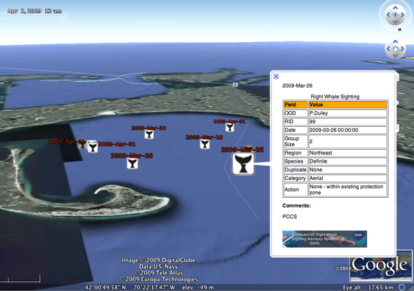
04.20.2009 13:05
Healy Google Earth Viz take 2
I've worked some more on the Healy Aloftcon in
Google Earth. Virgil
Zetterlind pointed out that I should be using a KML
NetworkLinkControl node.
A while back, I tried to package libkml for fink, but it was a bit of trouble. I should try again soon.
<?xml version="1.0" encoding="UTF-8"?>
<kml xmlns="http://earth.google.com/kml/2.0">
<NetworkLinkControl>
<minRefreshPeriod>600</minRefreshPeriod>
<linkName>Healy Aloftcon Camera 20 Apr 16:00</linkName>
<expires>2009-04-20T18:02:10Z</expires>
</NetworkLinkControl>
<Document>
<name>Healy Aloftcon Camera 20 Apr 16:00</name>
<!-- ... -->
</Document>
</kml>
I've released
the first draft of the code... Be warned: this code is not
pretty or well designed, but it does get the job done. I don't even
have a setuptools setup.py or a PyPi entry yet.A while back, I tried to package libkml for fink, but it was a bit of trouble. I should try again soon.
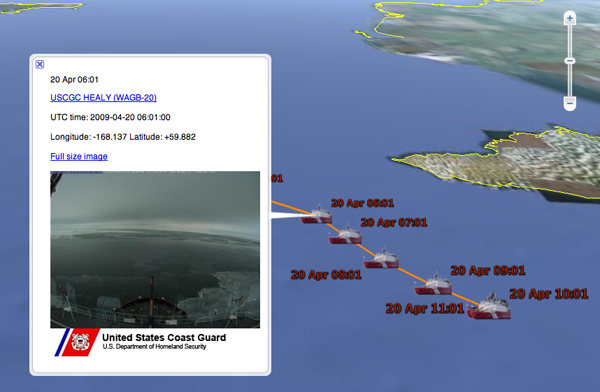
04.18.2009 17:59
USCGC Healy track and images in Google Earth
What timing. I just found out that
National Geographic has an article on the CCOM/JHC Law of the Sea
mapping this month: Healy
Mapping Mission - Arctic Landgrab.
I'm just now finishing up a short project this week to put the Healy Aloftcon images into Google Earth such that you can see the vessel track and the hourly images that are sent over the satellite link:
Healy Aloftcon in Google Earth
I've got a small kml file with a NetworkLink that checks every 10 minutes: healy-aloftcon-updating.kml. I could figure out how to tell Google Earth to only check just after I run the update cron job every hour.
I'm also creating a GeoRSS Simple feed that you can use to see the images. healy-aloftcon-latest.georss. I've likely made mistakes in creating this feed as this is my first try. If you know GeoRSS and can offer advice, I am all ears. Things like specifying coordinates in y,x threw me off.
I'm just now finishing up a short project this week to put the Healy Aloftcon images into Google Earth such that you can see the vessel track and the hourly images that are sent over the satellite link:
Healy Aloftcon in Google Earth
I've got a small kml file with a NetworkLink that checks every 10 minutes: healy-aloftcon-updating.kml. I could figure out how to tell Google Earth to only check just after I run the update cron job every hour.
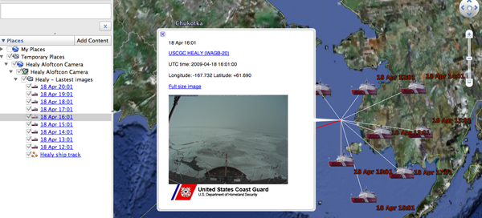
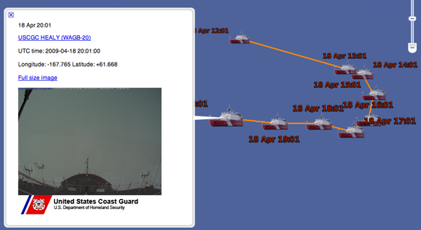
I'm also creating a GeoRSS Simple feed that you can use to see the images. healy-aloftcon-latest.georss. I've likely made mistakes in creating this feed as this is my first try. If you know GeoRSS and can offer advice, I am all ears. Things like specifying coordinates in y,x threw me off.
<?xml version="1.0" encoding="UTF-8"?>
<feed xmlns:dc="http://purl.org/dc/elements/1.1/"
xmlns:georss="http://www.georss.org/georss"
xmlns:sy="http://purl.org/rss/1.0/modules/syndication/"
xmlns="http://www.w3.org/2005/Atom">
<language>en</language>
<sy:updatePeriod>hourly</sy:updatePeriod>
<sy:updateFrequency>1</sy:updateFrequency>
<title>USCGC Healy Aloftcon Camera</title>
<link href="http://vislab-ccom.unh.edu/~schwehr/healy/healy-aloftcon-latest.georss" rel="self"/>
<id>http://vislab-ccom.unh.edu/~schwehr/healy/healy-aloftcon-latest.kml</id>
<updated>2009-04-18T21:01:00Z</updated>
<generator uri="http://schwehr.org/">Kurt Schwehr</generator>
<entry>
<title>Aloftcon Image</title>
<author>
<name>USCGC Healy</name>
</author>
<georss:point>61.6616666667 -167.776666667</georss:point>
<published>2009-04-18T21:01:00Z</published>
<content type="html"><![CDATA[
<a href="http://www.uscg.mil/pacarea/cgcHealy/">USCGC HEALY (WAGB-20)</a><br/>
UTC time: 20090418-2101<br/>
Longitude: -167.776666667 Latitude: 61.6616666667<br/>
<a href="http://mgds.ldeo.columbia.edu/healy/reports/aloftcon/2009/20090418-2101.jpeg">Full size image</a><br/>
<img width="300" height="225" src="http://mgds.ldeo.columbia.edu/healy/reports/aloftcon/2009/20090418-2101.jpeg"/>
]]></content>
</entry>
<!-- ... more entries ... -->
</feed>
I've not yet done the site map that google requests...
What is a Geo Sitemap?04.18.2009 06:35
Tips for working with MS Access Jet DB files
If anybody has an alternate point of
view or other suggestions, please send them my way.
MS Access is an easy way for people to quickly create a database, even if they have never used databases before. However, MS Access doesn't do a great job of giving background on how you should setup a DB. Here is a short set of suggestions for people who are creating new databases with spatial content. Before you begin, think carefully about your requirements and consider PostgreSQL+PostGIS, MySQL+Spatial Extensions, or SQLite+Spatial Lite.
A few general comments: For all of your critical fields, set the Required attribute to "Yes" such that people have to enter in a value. For your field names, make sure to avoid spaces or symbols. If you stick to characters, numbers, and the underscore, it will be easier to migrate your data to other databases if the need ever arises - this is something that comes up all the time. Back in March of 2008, I talked a bit about using mdbtools to dump SQL statements from an Access DB (Jet DB format) with the mdb-export command - this tips make it easier to import your data into other databases.
It is generally a good idea to give every table a primary key (the key icon in the left column). The primary key is often an automatically created index number (AutoNumber) and should be unique such that there is only one instance of any particular number.
Next, make sure that you create your coordinates as numbers with WGS84 decimal degrees. Use the sign of the number to specify the hemisphere - do not use N, S, E, W. Do not use degrees minute seconds inside the database. You can always provide this format later in the presentation layer of any application.
Finally, you generally want a timestamp with your observation. Make sure it is a Date/Time type and always use UTC timestamps. If you use some other timezone and you data ends up in the hands of someone in another timzezone or worse your data is being collected by people in different timezones, things will get out of hand. Also, keep all data of the same type together. Don't break your database tables on time periods (e.g. one for each year). The overall rule is to try to keep things consistant.
Hopefully, if you follow these tips, you will have a database that surveys you well and makes analysis go quickly. For those who are used to saying "lat long," I argue for aways writing "long lat" so that the data always appears in "x y" order.
Here is a quick tips for when someone sends you an Access DB. I wasn't able to open a database. I tried duplicating the file, but no luck. I just kept getting this error:
Matt helped me figure out that I needed to "Unblock" the database. Then it worked as expected.
MS Access is an easy way for people to quickly create a database, even if they have never used databases before. However, MS Access doesn't do a great job of giving background on how you should setup a DB. Here is a short set of suggestions for people who are creating new databases with spatial content. Before you begin, think carefully about your requirements and consider PostgreSQL+PostGIS, MySQL+Spatial Extensions, or SQLite+Spatial Lite.
A few general comments: For all of your critical fields, set the Required attribute to "Yes" such that people have to enter in a value. For your field names, make sure to avoid spaces or symbols. If you stick to characters, numbers, and the underscore, it will be easier to migrate your data to other databases if the need ever arises - this is something that comes up all the time. Back in March of 2008, I talked a bit about using mdbtools to dump SQL statements from an Access DB (Jet DB format) with the mdb-export command - this tips make it easier to import your data into other databases.
It is generally a good idea to give every table a primary key (the key icon in the left column). The primary key is often an automatically created index number (AutoNumber) and should be unique such that there is only one instance of any particular number.
Next, make sure that you create your coordinates as numbers with WGS84 decimal degrees. Use the sign of the number to specify the hemisphere - do not use N, S, E, W. Do not use degrees minute seconds inside the database. You can always provide this format later in the presentation layer of any application.
Finally, you generally want a timestamp with your observation. Make sure it is a Date/Time type and always use UTC timestamps. If you use some other timezone and you data ends up in the hands of someone in another timzezone or worse your data is being collected by people in different timezones, things will get out of hand. Also, keep all data of the same type together. Don't break your database tables on time periods (e.g. one for each year). The overall rule is to try to keep things consistant.
Hopefully, if you follow these tips, you will have a database that surveys you well and makes analysis go quickly. For those who are used to saying "lat long," I argue for aways writing "long lat" so that the data always appears in "x y" order.
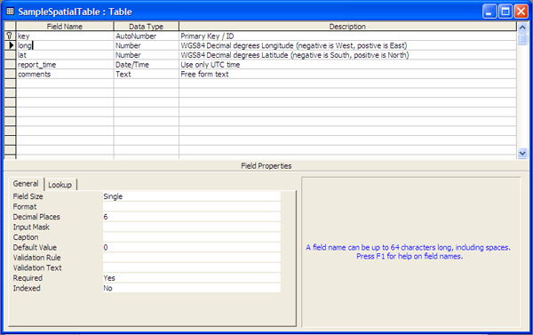
Here is a quick tips for when someone sends you an Access DB. I wasn't able to open a database. I tried duplicating the file, but no luck. I just kept getting this error:
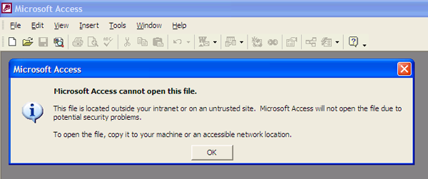
Matt helped me figure out that I needed to "Unblock" the database. Then it worked as expected.
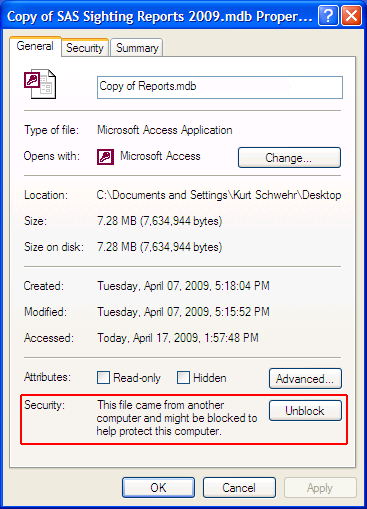
04.17.2009 13:48
Healy Aloftcon now with GPS
Steve Roberts has added GPS EXIF tags
to the Healy Aloftcon images. e.g.20090417-1701.jpeg

% exiftool 20090417-1701.jpeg | grep GPS GPS Version ID : 2.2.0.0 GPS Latitude Ref : North GPS Longitude Ref : West GPS Latitude : 61 deg 55' 48.00" N GPS Longitude : 171 deg 12' 42.00" W GPS Position : 61 deg 55' 48.00" N, 171 deg 12' 42.00" W
04.17.2009 13:08
Chart of the Future - Norfolk, VA - May 11th
Here is the announcement for the May
11th Chart of the Future (CotF) meeting in Norfolk, VA.
Registration for US Hydro not required. Both of images in the flier
are by Matt Plumlee of the CCOM Vislab.
Chart-of-the-Future_05112009.pdf
I've got a number of videos related to the Chart of the Future on YouTube. Don't forget to check page 2 of the videos.
Chart-of-the-Future_05112009.pdf
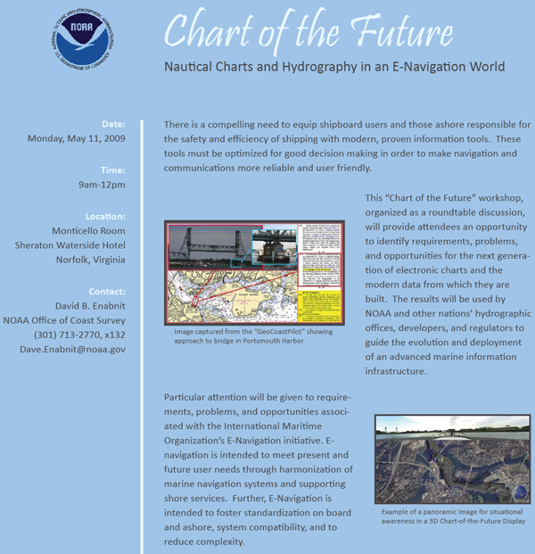
I've got a number of videos related to the Chart of the Future on YouTube. Don't forget to check page 2 of the videos.
04.16.2009 13:53
Towing practice
Spring in here and our vessels are
getting out on the water. With that comes time for training. Today,
I was a deck hand as the R/V Coastal Surveyor and R/V Cocheco
practiced towing. First we did on the side tows and then we
switched to front-to-back towing.
We weren't the only ones out on the water getting practice in... the USCG gave us a wave and then headed out to run their own towing drills.
And some nice shots...
And the S/V Mother of Perl with the Cocheco in the background (on the left)
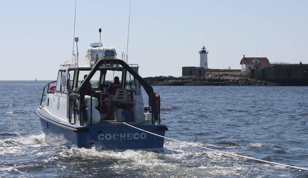
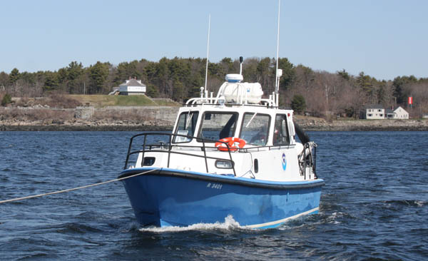
We weren't the only ones out on the water getting practice in... the USCG gave us a wave and then headed out to run their own towing drills.
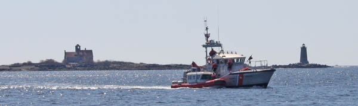
And some nice shots...
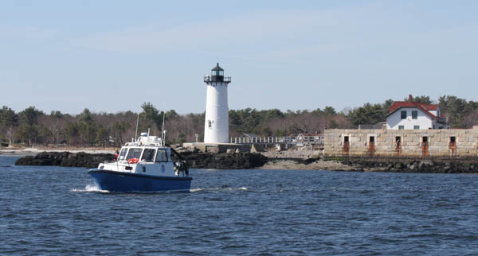
And the S/V Mother of Perl with the Cocheco in the background (on the left)
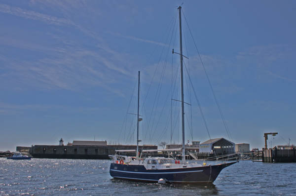
04.16.2009 07:14
Adding GPS EXIF tags to an image
While there are many tools that now
read GPS exif tags (e.g. jhead), most of them either can't write
the headers or don't provide a way to write EXIF fields or make it
difficult. ExifTool makes
it easy. On a Ubuntu Linux box. Here is the before:
See also: Write GPS data on your photos with Exiftool
% sudo apt-get install libimage-exiftool-perl % wget http://mgds.ldeo.columbia.edu/healy/reports/aloftcon/2009/20090201-1601.jpeg % exiftool 20090201-1601.jpeg ExifTool Version Number : 7.30 File Name : 20090201-1601.jpeg Directory : . File Size : 114 kB File Modification Date/Time : 2009:02:01 11:01:45 File Type : JPEG MIME Type : image/jpeg JFIF Version : 1.1 Resolution Unit : inches Resolution : 72 Y Resolution : 72 Comment : Sun Feb 01 16:00:32 2009 Image Width : 1280 Image Height : 960 Encoding Process : Baseline DCT, Huffman coding Bits Per Sample : 8 Color Components : 3 Y Cb Cr Sub Sampling : YCbCr4:2:0 (2 2) Image Size : 1280x960Now to add the GPS tags.
% exiftool -GPSLongitudeRef=W 20090201-1601.jpeg % exiftool -GPSLongitude=123.02 20090201-1601.jpeg % exiftool -GPSLatitudeRef=N 20090201-1601.jpeg % exiftool -GPSLatitude=43.216666 20090201-1601.jpeg % exiftool 20090201-1601.jpeg | grep GPS GPS Version ID : 2.2.0.0 GPS Latitude Ref : North GPS Longitude Ref : West GPS Latitude : 43 deg 12' 60.00" N GPS Longitude : 123 deg 1' 12.00" W GPS Position : 43 deg 12' 60.00" N, 123 deg 1' 12.00" WThe resulting tagged image: 20090201-1601-with-exif-gps.jpeg

See also: Write GPS data on your photos with Exiftool
04.15.2009 22:41
Bay Hydro II dedication
I
recently posted about the Bay Hydro II. It's now
official.
NOAA Dedicates New Chesapeake Bay Research Vessel
NOAA Dedicates New Chesapeake Bay Research Vessel
NOAA today christened a new state-of-the-art research vessel, R/V Bay Hydro II, which will collect oceanographic data in the Chesapeake Bay region - data critical to safe navigation and environmental protection in the nation's largest estuary. The dedication took place in Baltimore's Inner Harbor, featuring a ceremonial breaking of a champagne bottle over the bow and a cannon salute from the USS Constellation. "R/V Bay Hydro II serves as NOAA's 'eyes' to the seafloor of the Chesapeake Bay," said Mary Glackin, deputy under secretary for oceans and atmosphere. "Since human eyes can't see to the seafloor, R/V Bay Hydro II's state-of-the-art equipment ensures NOAA can continue providing the nation with timely and accurate charts and quality science." ...
04.15.2009 14:36
2 more Class B AIS transcievers
Today, I received an ACR COBHAM
Nauticast Class B "Transponder" and a Comar CSB200 Class B AIS
Transponder. Missing from the image below are a CNS VDL6000 w/ Blue
Force and 2 SR162 receivers that are out in the field. We purchased
three different Class B devices to get more experience with
different devices.
As my co-author Brian pointed out, these units don't really operatate as transponders very often. They probably should be refered to as transcievers. If you ask Dictionary.com about transponder:
As my co-author Brian pointed out, these units don't really operatate as transponders very often. They probably should be refered to as transcievers. If you ask Dictionary.com about transponder:
transponder a radio, radar, or sonar transceiver that automatically transmits a signal upon reception of a designated incoming signal. Origin: 1940-45; trans(mitter) + (res)ponderSo only in the case when the unit is being interogated, does these devices work as a transponder.
04.14.2009 17:47
AIS Traffic Analysis paper finished
Yesterday, Brian Calder and I
finished our paper for the US Hydro conference in May:
Traffic Analysis for the Calibration of Risk Assessment Methods [PDF]
Traffic Analysis for the Calibration of Risk Assessment Methods [PDF]
In order to provide some measure of the uncertainty inherent in the sorts of charting data that are provided to the end-user, we have previously proposed risk models that measure the magnitude of the uncertainty for a ship operating in a particular area. Calibration of these models is essential, but the complexity of the models means that we require detailed information on the sorts of ships, traffic patterns and density within the model area to make a reliable assessment. In theory, the ais system should provide this information for a suitably instrumented area. We consider the problem of converting, filtering and analysing the raw ais traffic to provide statistical characterizations of the traffic in a particular area, and illustrate the method with data from 2008-10-01 through 2008-11-30 around Norfolk, VA. We show that it is possible to automatically construct aggregate statistical characteristics of the port, resulting in distributions of transit location, termina- tion and duration by vessel category, as well as type of traffic, physical dimensions, and intensity of activity. We also observe that although 60 days give us sufficient data for our immediate purposes, a large proportion of it--up to 52% by message volume--must be considered dubious due to difficulties in configuration, maintenance and operation of ais transceivers.
04.14.2009 13:45
Anne Gilman's PhD Defense
Update 15-Apr-2009: Anne
successfully defended her PhD. Congrats!
Anne has been a member of the Vislab for a while now. Tomorrow, she will be defending here PhD at 9 AM in the Admiral's Conference room at CCOM! Here is a draft of her abstract:
KEEPING VISUAL-AUDITORY ASSOCIATIONS IN MIND: MEASURING THE IMPACT OF DETAIL AND MEANINGFULNESS ON CROSSMODAL WORKING MEMORY CAPACITY
Anne has been a member of the Vislab for a while now. Tomorrow, she will be defending here PhD at 9 AM in the Admiral's Conference room at CCOM! Here is a draft of her abstract:
KEEPING VISUAL-AUDITORY ASSOCIATIONS IN MIND: MEASURING THE IMPACT OF DETAIL AND MEANINGFULNESS ON CROSSMODAL WORKING MEMORY CAPACITY
Complex objects have been found to take up more visual working memory-as measured by lowered change-detection accuracy with such stimuli-than simple colored shapes (Treisman, 2006; Xu, 2002). While this result is consistent with verbal working memory findings showing reduced apparent capacity with longer words (Baddeley, 2007), other research has demonstrated that features contributing to object recognizability can help visual working memory capacity (Olsson & Poom, 2005; Alvarez & Cavanagh, 2004). Furthermore, until very recently, no measures of crossmodal working memory capacity had been proposed, when crossmodal associations are part of the fabric of learning, from classical conditioning to calculus. The working memory load of a range of complex crossmodal objects was further examined in a sequence of experiments adapting classic visual change detection procedures (Vogel et al., 2001) to measure crossmodal (visual-auditory) working memory capacity. The adapted method involves rapid sequential presentation of image-sound pairs, with a test pair appearing after a 1-second delay. Images are placed equidistant from each other in the initial array, approximately 3.5! from the center of the screen. A series of experiments using this new measure evaluated the working memory impact of two sources of complexity: featural detail and object meaningfulness. Changing the location of the test pair-as opposed to presenting it in its original position-resulted in lower changedetection performance. More surprising was an interaction of test-probe location with the xii role of different image types (gray and colored shapes, drawings, and photos), where image type showed no consistent pattern of influence on WM capacity when test objects appeared in their original locations; when shown in an alternate location, more-complex images showed higher recall when associated with the same set of sounds. Independent of test-probe location, more-complex animal sounds provided better crossmodal change detection performance than abstract tones. An association measure was applied to both abstract and representational images, showing consistently higher numbers of associations for the latter, and a higher response bias for the more-meaningful images. This meaningfulness characteristic did not covary with demonstrated working memory capacity. Clear WM advantages were demonstrated in the centered-test condition for color images, both more and less meaningful, compared to grayscale ones. These results demonstrate the utility of the novel crossmodal working memory capacity measure while raising questions about predictions of cognitive load based solely on featural characteristics for both abstract and meaningful images.
04.12.2009 08:34
What the XBox and Netflix are missing - on demand news
Time to ditch your DVDs? Alternative delivery catches on for
movies, TV [Fosters]
We've already ditched Cable and Satellite TV. The main thing missing is decent news. Like CNN did to Cable many years ago, someone needs to build a decent on demand news system for Netflix and other streaming systems. I'd definitely pay a couple dollars a month for good streaming news video... especially if there were a way to pick a few categories of news. Why not build a news cast for me based on my preferences including amount of available time?
We've already ditched Cable and Satellite TV. The main thing missing is decent news. Like CNN did to Cable many years ago, someone needs to build a decent on demand news system for Netflix and other streaming systems. I'd definitely pay a couple dollars a month for good streaming news video... especially if there were a way to pick a few categories of news. Why not build a news cast for me based on my preferences including amount of available time?
04.11.2009 21:24
gnuplot with sqlite
When I'm trying to work fast, I often
revert to my old methods. I'm doing some plots of N-AIS station
data that I have in a database. Here I've split the Class A and
Class B data into two groups. I want to do a SQL query from the two
databases and plot the data. I could do this in a shell script, but
it is nicer to work in the emacs gnuplot mode. The "!" provides
access to the shell, so I can make a sqlite3 call to pull the
needed day. Too bad gnuplot can't directly use sqlite3.
#!/usr/bin/env gnuplot
!echo "" > a-r003669930.dat
!sqlite3 classa-3station.db3 'SELECT day_number, pos_total, pos_us, mmsi_total, mmsi_us FROM classa_summary WHERE station="r003669930";' | tr '|' ' ' >> a-r003669930.dat
!echo "" > b-r003669930.dat
!sqlite3 classb.db3 'SELECT day_number, pos_total, pos_us, mmsi_total, mmsi_us FROM classb_summary WHERE station="r003669930";' | tr '|' ' ' >> b-r003669930.dat
set xlabel 'Day number - 2008-01-01 to 2009-04-04'
set logscale y
set title 'MMSI/day for station r003669930 New York / CT?'
set ylabel 'Distinct MMSI / day'
plot 'a-r003669930.dat' using 1:4 with l title 'Class A Total', 'a-r003669930.dat' using 1:5 with p title 'Class A US' , \
'b-r003669930.dat' using 1:4 with l title 'Class B Total', 'b-r003669930.dat' using 1:5 with p title 'Class B US'
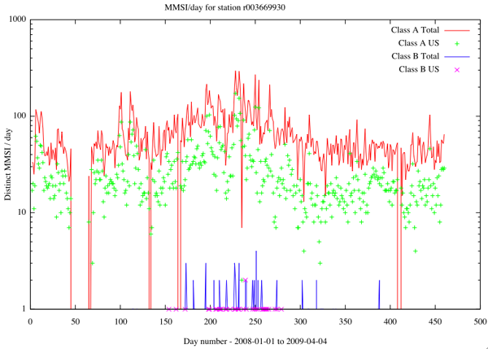
04.10.2009 09:47
West Marine AIS-1000 Class B
I've just received two West Marine
AIS-1000 Class B transponders. I've got two other brands that
should be arriving in the next week or two, so hopefully, we will
have 4 vessels in the Portsmouth, NH area broadcasting their
positions.
The back side of the device:
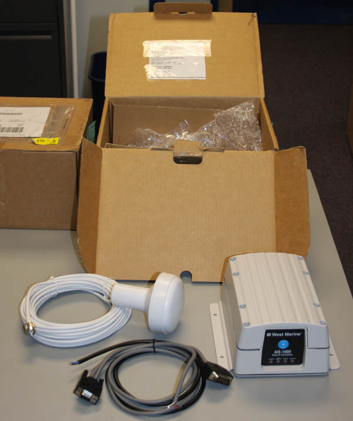
The back side of the device:
04.09.2009 17:44
sqlite3 python - better way to pull a lookup table?
In python, is there a better way to
build a dictionary for a lookup table pulled from sqlite3? Yup!
It's a little weird, but this makes it a one liner (aside from the
imports and db setup):
import sqlite3
cx = sqlite3.connect('classb.db3')
cx.row_factory = sqlite3.Row
mmsi_prefixes = dict([tuple(row) for row in cx.execute('SELECT code,country FROM mmsi_prefix;')])
The resulting dictionary:
{
512: u'New Zealand',
750: u'Guyana',
514: u'Cambodia (Kingdom of)',
515: u'Cambodia (Kingdom of)',
516: u'Christmas Island (Indian Ocean)',
...
}
04.09.2009 15:00
USCG station codes
Just ran into a variation in the
USCG's station specification. In addition to the 'r' for receiver
and 'b' for basestation, I'm seeing 'R' for one receiver. Here is a
Class B NMEA string with the capital R.
% ./ais_msg_18.py -d '!AIVDM,1,1,,B,B8suM;kIope?cI0kgJIOuOqwb`=qlnNmnPWj,0*42,s21013,d-123,T03.02412746,x279,R11SMOR1,1236410221'
positionb:
MessageID: 18
RepeatIndicator: 0
UserID: 599743791
Reserved1: 0
SOG: 47.9
PositionAccuracy: 1
longitude: 39.53565666666666666666666667
latitude: 5.651476666666666666666666667
COG: 153.5
TrueHeading: 191
TimeStamp: 51
RegionalReserved: 0
Spare: 0
RAIM: False
CommStateSelector: 1
CommState: 164729
Which appears to be in Africa... inland Ethiopia. I'm sure this is
just noise.04.09.2009 07:08
network uptime derived from data logging
I just tried out the idea of using my
N-AIS feed to check network uptime and it worked much better than I
though it would. For each day, I counted the unique seconds in the
data timestamps and divided by the number of seconds in a day. This
is not the best way to measure the uptime, but it is interesting.
The main causes of outages are:
Overall uptime for the entire datalogging system as seen by CCOM:
Note that this is not a good way to judge any one component of the system. The timestamps are being added regionally by the uscg and I have no way of separating out the failure modes from just the timestamped NMEA strings.
Contrast that with one of our field data loggers running Ubuntu 7.10.
NOTE: I found that my script didn't notice entire days with no data. For 2008-06-{13,14}, there was nothing, so my % uptime is over estimated.
- Power outages to our building (we are on the wrong site of the train tracks)
- Loss of network connectivity at CCOM or UNH
- Loss of the network between Groton, CT and UNH
- Three hangs of my Mac desktop that is logging before I upgraded to 10.5
- One outage of 1 hour as I upgraded to mac osx 10.5
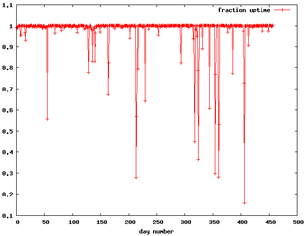
Overall uptime for the entire datalogging system as seen by CCOM:
seconds = [int(d.split()[1]) for d in file('sec-per-day.dat')]
len(seconds)
Out: 458 # Days
sum(seconds) / (len(seconds)*24*60*60.)
Out: 0.97799285844250361
The overall system was not working for 10 days worth of time during
those 458 days.Note that this is not a good way to judge any one component of the system. The timestamps are being added regionally by the uscg and I have no way of separating out the failure modes from just the timestamped NMEA strings.
Contrast that with one of our field data loggers running Ubuntu 7.10.
% uptime 06:58:57 up 408 days, 17:31, 1 user, load average: 0.00, 0.07, 0.23The field machine is at Adams Point in Jackson lab and has a small UPS that has made it through all the local power hickups. Plus the machine logs locally with periodic dumps back to ccom. Too bad the sensors attached to it are not as reliable.
NOTE: I found that my script didn't notice entire days with no data. For 2008-06-{13,14}, there was nothing, so my % uptime is over estimated.
04.08.2009 15:24
Chart of the Future at the US Hydro meeting
Come join us on Friday right after
the Hydro conference at the last workshop.
U.S. Hydro 2009 Workshops
U.S. Hydro 2009 Workshops
Chart of the Future: Nautical Charts and Hydrography in an E-Navigation World in the Monticello Room There is a clear and compelling need to equip shipboard users and those ashore responsible for the safety and efficiency of shipping with modern, proven information tools. These tools must be optimized for good decision making in order to make maritime navigation and communications more reliable and user friendly. The overall goal is to improve safety and efficiency of navigation and to reduce errors. This "Chart of the Future" workshop, organized as a roundtable discussion, will provide attendees an opportunity to identify requirements, problems, and opportunities for the next generation of electronic charts and the modern source data from which they are built. The results will be used by NOAA and other hydrographic offices, developers, and regulators to guide the evolution and deployment of an advanced marine information infrastructure. Particular attention will be given to requirements, problems, and opportunities associated with the International Maritime Organization's E-Navigation initiative. E-navigation is intended to meet present and future user needs through harmonization of marine navigation systems and supporting shore services. Further, E-Navigation is intended to avoid a lack of standardization on board and ashore, incompatibility between vessels, and to avoid increased complexity. For further information contact Dave.enabnit@noaa.gov
04.07.2009 21:48
Need help with compiling scipy 0.7.0 on fink
Update: Sebastien Maret found the
problem over in numpy (called scipy-core-py in fink): Trac ticket 1087 for
numpy - Unsupported -arch flag on Darwin. Should now work in
fink thanks to Sebastien patching it.
If anyone know how to fix this compile error with scipy 0.7.0 on Mac OSX 10.5.5 intel? This builds on PPC. Where do I find this -arch i686 thing and get rid of it?
SciPy Dev Trac entry 915
If anyone know how to fix this compile error with scipy 0.7.0 on Mac OSX 10.5.5 intel? This builds on PPC. Where do I find this -arch i686 thing and get rid of it?
SciPy Dev Trac entry 915
gcc version 4.4.0 20090327 (prerelease) (GCC) Using built-in specs. Target: i686-apple-darwin9 Configured with: ../gcc-4.4-20090327/configure --prefix=/sw \ --prefix=/sw/lib/gcc4.4 --mandir=/sw/share/man --infodir=/sw/share/info \ --enable-languages=c,c++,fortran,objc,java --with-gmp=/sw \ --with-libiconv-prefix=/sw --with-ppl=/sw --with-cloog=/sw \ --with-system-zlib --x-includes=/usr/X11R6/include \ --x-libraries=/usr/X11R6/lib --disable-libjava-multilib --with-arch=nocona \ --with-tune=generic --build=i686-apple-darwin9 --host=i686-apple-darwin9 \ --target=i686-apple-darwin9 Thread model: posix gcc version 4.4.0 20090327 (prerelease) (GCC) customize Gnu95FCompiler using build_clib building 'dfftpack' library compiling Fortran sources Fortran f77 compiler: /sw/bin/gfortran -Wall -ffixed-form -fno-second-underscore \ -arch i686 -fPIC -O3 -funroll-loops Fortran f90 compiler: /sw/bin/gfortran -Wall -fno-second-underscore -arch i686 \ -fPIC -O3 -funroll-loops Fortran fix compiler: /sw/bin/gfortran -Wall -ffixed-form -fno-second-underscore \ -Wall -fno-second-underscore -arch i686 -fPIC -O3 -funroll-loops creating build/temp.macosx-10.5-i386-2.5 creating build/temp.macosx-10.5-i386-2.5/scipy creating build/temp.macosx-10.5-i386-2.5/scipy/fftpack creating build/temp.macosx-10.5-i386-2.5/scipy/fftpack/src creating build/temp.macosx-10.5-i386-2.5/scipy/fftpack/src/dfftpack compile options: '-I/sw/lib/python2.5/site-packages/numpy/core/include -c' gfortran:f77: scipy/fftpack/src/dfftpack/dcosqb.f f951: error: unrecognized command line option "-arch" f951: error: unrecognized command line option "-arch" error: Command "/sw/bin/gfortran -Wall -ffixed-form -fno-second-underscore -arch \ i686 -fPIC -O3 -funroll-loops -I/sw/lib/python2.5/site-packages/numpy/core/include \ -c -c scipy/fftpack/src/dfftpack/dcosqb.f -o \ build/temp.macosx-10.5-i386-2.5/scipy/fftpack/src/dfftpack/dcosqb.o" failed with exit status 1
04.07.2009 10:47
Windows Time Service - is it running?
Here is how you check to see if
windows time service is running on Windows XP. Thanks to Will F.
for showing me this.
Start -> Control Pannels -> Administrative Tools -> Services -> Extended tab.
As it says:
Start -> Control Pannels -> Administrative Tools -> Services -> Extended tab.
As it says:
Services (Local) Windows Time Description: Maintains date and tie synchronization on all clients and servers in the network. If this service is stopped, date and time synchronization will be unavailable. If this servece is disabled, any services that explicitly depend on it will fail to start.My recommendation is to install NTP and avoid Windows Time Service.
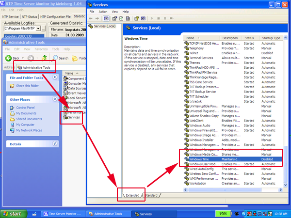
04.05.2009 14:32
Reading a Bathymetry Attributed Grid (BAG) with python
Turns out, it is just easier to go
read a bag on my own with python. I just added h5py to fink.
#!/usr/bin/env python
import h5py
f = h5py.File('sample.bag')
print f.listobjects()
print f.listitems()
bag_root = f['/BAG_root']
metadata = ''.join(bag_root['metadata'])
print metadata[0:200]
elevation = bag_root['elevation']
print elevation.shape
data = elevation.value
print type(data)
print data
The results of the above code:
[('BAG_root', <HDF5 group "BAG_root" (4 members)>)]
<?xml version="1.0" encoding="UTF-8" standalone="no" ?><!-- \
Sample Bathymetric Attribute Grid Meta data - Created by the Open \
Naviation Surface Working Group. Based on ISO19139 schema v1.0 --><smXML:
(10, 10)
<type 'numpy.ndarray'>
[[ 10. 10.10000038 10.19999981 10.30000019 10.39999962 10.5
10.60000038 10.69999981 10.80000019 10.89999962]
[ 11. 11.10000038 11.19999981 11.30000019 11.39999962 11.5
11.60000038 11.69999981 11.80000019 11.89999962]
[ 12. 12.10000038 12.19999981 12.30000019 12.39999962 12.5
12.60000038 12.69999981 12.80000019 12.89999962]
[ 13. 13.10000038 13.19999981 13.30000019 13.39999962 13.5
13.60000038 13.69999981 13.80000019 13.89999962]
[ 14. 14.10000038 14.19999981 14.30000019 14.39999962 14.5
14.60000038 14.69999981 14.80000019 14.89999962]
[ 15. 15.10000038 15.19999981 15.30000019 15.39999962 15.5
15.60000038 15.69999981 15.80000019 15.89999962]
[ 16. 16.10000038 16.20000076 16.29999924 16.39999962 16.5
16.60000038 16.70000076 16.79999924 16.89999962]
[ 17. 17.10000038 17.20000076 17.29999924 17.39999962 17.5
17.60000038 17.70000076 17.79999924 17.89999962]
[ 18. 18.10000038 18.20000076 18.29999924 18.39999962 18.5
18.60000038 18.70000076 18.79999924 18.89999962]
[ 19. 19.10000038 19.20000076 19.29999924 19.39999962 19.5
19.60000038 19.70000076 19.79999924 19.89999962]]
04.05.2009 10:22
OpenNS with GeoTrans
I just got Open Navigation Surface (OpenNS)
to compile with NGA's GeoTrans 2.4.2. OpenNS comes with an
unversioned geotrans tar, the since then, NGA has changed the API
for the Lambert projections. Of course, I tried the included
bagread to see if what I had done worked on mac osx with the
geograns.info
and openns fink packages, and I got this error:
% bin/bagread sample-data/sample.bag
Input BAG file: sample-data/sample.bag
trying to open: {sample-data/sample.bag}...
bag file unavailable ! 400
I haven't had time to dig into the code to explore what that error
means. Here is the diff to OpenNS:
% diff -ur OpenNS_CandidateRelease_1.1.0{,-new}
Giving...
diff -ur OpenNS_CandidateRelease_1.1.0/api/bag_geotrans.c OpenNS_CandidateRelease_1.1.0-new/api/bag_geotrans.c
--- OpenNS_CandidateRelease_1.1.0/api/bag_geotrans.c 2006-04-28 15:55:50.000000000 -0400
+++ OpenNS_CandidateRelease_1.1.0-new/api/bag_geotrans.c 2009-04-04 21:29:12.000000000 -0400
@@ -159,7 +159,7 @@
Transverse_Mercator_Parameters tranmerc; /* transverse mercator */
UTM_Parameters utm; /* universal transverse mercator */
Polar_Stereo_Parameters polarst; /* polar stereographic */
- Lambert_Conformal_Conic_Parameters lambert; /* lambert conformal conic */
+ Lambert_Conformal_Conic_2_Parameters lambert; /* lambert conformal conic */
} GeotransParameters;
/* union of all the coordinate tuples defined in engine.h needed for bag */
@@ -171,7 +171,7 @@
UTM_Tuple utm; /* universal transverse mercator */
Polar_Stereo_Tuple polarst; /* polar stereographic */
UPS_Tuple ups; /* universal polar stereographic */
- Lambert_Conformal_Conic_Tuple lambert; /* lambert conformal conic */
+ Lambert_Conformal_Conic_2_Tuple lambert; /* lambert conformal conic */
} GeotransTuple;
/* these data are used global within this file */
@@ -340,7 +340,7 @@
{
case Input:
{
- inParams.mercator.origin_latitude = params->origin_latitude*DEG2RAD;
+ inParams.mercator.latitude_of_true_scale = params->origin_latitude*DEG2RAD;
inParams.mercator.central_meridian = params->central_meridian*DEG2RAD;
inParams.mercator.scale_factor = params->scale_factor;
inParams.mercator.false_easting = params->false_easting;
@@ -351,7 +351,7 @@
break;
case Output:
{
- outParams.mercator.origin_latitude = params->origin_latitude*DEG2RAD;
+ outParams.mercator.latitude_of_true_scale = params->origin_latitude*DEG2RAD;
outParams.mercator.central_meridian = params->central_meridian*DEG2RAD;
outParams.mercator.scale_factor = params->scale_factor;
outParams.mercator.false_easting = params->false_easting;
@@ -670,8 +670,8 @@
inParams.lambert.std_parallel_2 = params->std_parallel_2*DEG2RAD;
inParams.lambert.false_easting = params->false_easting;
inParams.lambert.false_northing = params->false_northing;
- stat |= Set_Coordinate_System( Interactive, Input, Lambert_Conformal_Conic );
- stat |= Set_Lambert_Conformal_Conic_Params( Interactive, Input, inParams.lambert );
+ stat |= Set_Coordinate_System( Interactive, Input, Lambert_Conformal_Conic_2 );
+ stat |= Set_Lambert_Conformal_Conic_2_Params( Interactive, Input, inParams.lambert );
}
break;
case Output:
@@ -682,8 +682,8 @@
outParams.lambert.std_parallel_2 = params->std_parallel_2*DEG2RAD;
outParams.lambert.false_easting = params->false_easting;
outParams.lambert.false_northing = params->false_northing;
- stat |= Set_Coordinate_System( Interactive, Output, Lambert_Conformal_Conic );
- stat |= Set_Lambert_Conformal_Conic_Params( Interactive, Output, outParams.lambert );
+ stat |= Set_Coordinate_System( Interactive, Output, Lambert_Conformal_Conic_2 );
+ stat |= Set_Lambert_Conformal_Conic_2_Params( Interactive, Output, outParams.lambert );
}
break;
default:
@@ -741,7 +741,7 @@
stat |= init_ups( Input, input_params );
}
break;
- case Lambert_Conformal_Conic:
+ case Lambert_Conformal_Conic_2:
{
stat |= init_lambert( Input, input_params );
}
@@ -802,7 +802,7 @@
stat |= init_ups( Output, output_params );
}
break;
- case Lambert_Conformal_Conic:
+ case Lambert_Conformal_Conic_2:
{
stat |= init_lambert( Output, output_params );
}
@@ -870,11 +870,11 @@
Set_UPS_Coordinates( Interactive, Input, inTuple.ups );
}
break;
- case Lambert_Conformal_Conic:
+ case Lambert_Conformal_Conic_2:
{
inTuple.lambert.easting = input_coords->easting;
inTuple.lambert.northing = input_coords->northing;
- Set_Lambert_Conformal_Conic_Coordinates( Interactive, Input, inTuple.lambert );
+ Set_Lambert_Conformal_Conic_2_Coordinates( Interactive, Input, inTuple.lambert );
}
break;
default:
@@ -942,9 +942,9 @@
output_coords->hemisphere = outTuple.ups.hemisphere;
}
break;
- case Lambert_Conformal_Conic:
+ case Lambert_Conformal_Conic_2:
{
- stat |= Get_Lambert_Conformal_Conic_Coordinates( Interactive, Output, &outTuple.lambert );
+ stat |= Get_Lambert_Conformal_Conic_2_Coordinates( Interactive, Output, &outTuple.lambert );
output_coords->easting = outTuple.lambert.easting;
output_coords->northing = outTuple.lambert.northing;
}
diff -ur OpenNS_CandidateRelease_1.1.0/api/dt_cc.h OpenNS_CandidateRelease_1.1.0-new/api/dt_cc.h
--- OpenNS_CandidateRelease_1.1.0/api/dt_cc.h 2006-02-20 17:07:03.000000000 -0500
+++ OpenNS_CandidateRelease_1.1.0-new/api/dt_cc.h 2009-04-04 17:41:05.000000000 -0400
@@ -18,7 +18,7 @@
#include <mgrs/mgrs.h>
#include <mercator/mercator.h>
#include <loccart/loccart.h>
-#include <lambert/lambert.h>
+#include <lambert_2/lambert_2.h>
#include <grinten/grinten.h>
#include <gnomonic/gnomonic.h>
#include <georef/georef.h>
diff -ur OpenNS_CandidateRelease_1.1.0/api/libincludes.pro OpenNS_CandidateRelease_1.1.0-new/api/libincludes.pro
--- OpenNS_CandidateRelease_1.1.0/api/libincludes.pro 2006-03-13 15:48:06.000000000 -0500
+++ OpenNS_CandidateRelease_1.1.0-new/api/libincludes.pro 2009-04-04 21:30:26.000000000 -0400
@@ -1,5 +1,5 @@
-XERCESCROOT = $(PWD)/../extlibs/xerces-c-src_2_6_0
+#XERCESCROOT = $(PWD)/../extlibs/xerces-c-src_2_6_0
# Setup the OpenNS software development includes. Normally application projects
# will just need to include INC_OPENNSALL.
-INC_OPENNSALL = ../api ../extlibs/hdf5-1.6.1/src ../extlibs/geotrans ../extlibs/beecrypt-4.1.2 ../extlibs $(XERCESCROOT)/src
+#INC_OPENNSALL = ../api ../extlibs/hdf5-1.6.1/src ../extlibs/geotrans ../extlibs/beecrypt-4.1.2 ../extlibs $(XERCESCROOT)/src
diff -ur OpenNS_CandidateRelease_1.1.0/api/libmaster.pro OpenNS_CandidateRelease_1.1.0-new/api/libmaster.pro
--- OpenNS_CandidateRelease_1.1.0/api/libmaster.pro 2006-07-13 10:33:47.000000000 -0400
+++ OpenNS_CandidateRelease_1.1.0-new/api/libmaster.pro 2009-04-04 21:21:49.000000000 -0400
@@ -51,7 +51,7 @@
OBJECTS_DIR = .obj/$(HOSTMACHINE)
QMAKE_CFLAGS += ${IVSCOPTS}
QMAKE_CXXFLAGS += ${IVSCCOPTS2}
- OPENNSLIBS += -lhdf5 -lxerces-c -lgeotrans -lbeecrypt -lszip -lzlib -lpthread
+ OPENNSLIBS += -lhdf5 -lxerces-c -lgeotrans -lbeecrypt -lsz -lz -lpthread
LIBS += $$SYSOBJFILES $$OPENNSLIBS $$EXTRAUNIXLIBS
DESTDIR = ../lib/$(HOSTMACHINE)/
macx {
04.04.2009 17:01
Guidelines to releasing open source code
What works for commercial software
does not work in the open source world. In the open source world,
you need to "play nice." Here are some quick items that I keep
running into. I'm not saying that you have to live 100% by the
GNU
Coding Standards, but software that is written with those
concepts in mind is much easier to port and package.
- Name your package carefully. It's best if your name makes sense as all one stream of letters and numbers. e.g. [a-z][a-z0-9]+
- Don't restrict your downloads and force a user to submit an email and/or click that they accept the license on a web page. If curl or wget won't work, I don't want to use the software.
- Provide a tar of your source in the form of name-version.tar.bz2. Something about zips makes things go wrong way to often.
- NEVER EVER re-release a tar with the same name with different content. If the MD5 sum chances, up the minor minor version number (N.N.N+1). Hey, it's free! Even if it was just a couple hours ago, change the number. One tar filename - one md5 sum.
- Compress your tar with "bzip2 -9" to save the worlds mirrors disk space and reduce network traffic
- Your tar should unpack to name-version
- In your main release, do not include other packages. It's fine if you make some separate bloated beast of an archive, but don't make me download it.
- Do NOT put compiled binaries in the archive. Java coders... don't just give me a jar full of compiled class files.
- Use a nice build system. If you have properly used gnu autoconf for C or C++ projects (or setuptools/pip for python), I might actually be able to build your code.
- Add some unit tests so I know that what I've built works with the libraries on the computer that I've got.
- Include a history or change log. Make sure to note big changes in dependencies.
- Include a README file. Make sure to clearly specify the software's license.
- Use a sane and common license... one of GPL, LGPL, MIT/BSD, or straight Public Domain. Don't try to write your own. You won't understand it and neither will eye.
- If you are producing a shared library, please try to number your .so/dylib sanely and make libtool number it right. package-1.0 and package-2.0 should have different library major numbers. The major number should change when your libary is binary incompatible. It's okay if package-3.0 has a libary.
- Use the latest version of libtool. Learn "otool -L" if you are a mac developer
- Mac Developers... not everybody wants to use Frameworks.
- Try to give your command line programs names that don't class with other packages. And if you let me specify a prefix to commands, all the better.
- Man pages are good. Provide them and let me control where they get installed.
- Give me a place to submit bugs and patches. Don't make me subscribe to your mailing list. Give me a way to reset a password for your site without contacting you by email (Dear OGC... hint hint)
- If you are writing C or C++, try to use a modern version of the language. K&R C is just not a good thing. Turn on the compiler warnings and fix most of them.
- Build your code on at least two architectures.
- UNIX != only Solaris. To many of us, UNIX is a superset of Cygwin, Linuxes, Solaris, HPUX, Dariwin (Mac OSX), and more.
- Provide examples with text describing them. If they are big, put them in a separate archive (same goes for the test data).
- Provide read only access to your revision control repository (git,svn,mercurial, etc), but don't stop making point releases. Packaging from a moving target is scary.
- Stop using CVS. SVN (among others) is so much better. It will make your code better to switch away from that crusty old beast.
- ... there's more but back to real work for me ...
04.04.2009 08:07
Python Sqlite3 Row factory
Python's sqlite3 module can
access rows by name rather than index... no fancy ORM needed.
It does require using Python 2.6. Python 2.5 intruduced the sqlite3
interface module, but it does not have the field/column by name
feature. Here is getting started. The key is to enable the "Row
Factory"
ipython
import sqlite3
import numpy as np # For arrays
cx = sqlite3.connect('transits.db3')
cx.row_factory = sqlite3.Row # Enable the row factory
sqlite3 also has a feature that we don't need to create a database
cursor. Grab one row from the database:
row = cx.execute('SELECT * FROM raw_transits LIMIT 1;').fetchone()
print row # Get the row the normal way
print row.keys() # Get the column/field names
print 'Direct access',row['key'],row['UserID']
This prints out:
(1, 205493000, 72, 1226580085, 1226597127, 0.5, 0.20000000000000001, 300.0, 600.0, 0) ['key', 'UserID', 'shipandcargo', 'start_time', 'end_time', 'active_sog', 'static_sog', 'static_time', 'max_timeg ap', 'dubious'] Direct access 1 205493000Since we have the column/field names, we can loop over all the fields or use the new python string templating "format" function. It helps that a row can now be turned into a dict, but by asking it to become a dict.
for key in row.keys():
print key, row[key]
print dict(row)
print '''A row...
key: {0[key]}
MMSI: {0[UserID]}
Ship and Cargo: {0[shipandcargo]}
'''.format(dict(row))
The results...
UserID 205493000
shipandcargo 72
start_time 1226580085
end_time 1226597127
active_sog 0.5
static_sog 0.2
static_time 300.0
max_timegap 600.0
dubious 0
{'shipandcargo': 72, 'static_sog': 0.20000000000000001, 'start_time': 1226580085, 'UserID': 205493000, 'static_ti
me': 300.0, 'dubious': 0, 'end_time': 1226597127, 'key': 1, 'max_timegap': 600.0, 'active_sog': 0.5}
A row...
key: 1
MMSI: 205493000
Ship and Cargo: 72
We can now also do a list comprehension to convert a fetched
list of a column. The numpy array allows for more effient storage
of a list where every element is the same.
mmsi = np.array([row['UserID'] for row in cx.execute('SELECT UserID from raw_transits;')])
# Avoid as many replacements by using AS
active_sog = np.array([row['data'] for row in cx.execute('SELECT active_sog AS data from raw_transits;')])
#
# Pull in the whole database into memory
#
keys = cx.execute('SELECT * FROM raw_transits LIMIT 1;').fetchone().keys()
data = {}
for key in keys:
data[key] = np.array([row['data'] for row in cx.execute('SELECT %s AS data from raw_transits;' % (key,))])
print 'MMSI Array:',len(mmsi),type(mmsi)
This results in mmsi being an array:
MMSI Array: 15785 <type 'numpy.ndarray'>Now that we have a dictionary call data we can start plotting up the data. If you want to do this interactively, pylab will help (ipython -pylab):
import pylab
pylab.plot(data['shipandcargo'])
pylab.savefig('shipandcargo.gif')
pylab.show()
However, if you want to plot straight to a file and prevent a GUI
from popping up, do this:
import matplotlib
matplotlib.use('Agg')
import matplotlib.pyplot as plt
fig = plt.figure()
ax = fig.add_subplot(111)
ax.plot(data['shipandcargo'])
ax.set_title('Ship and Cargo')
fig.savefig('shipandcargo.png')
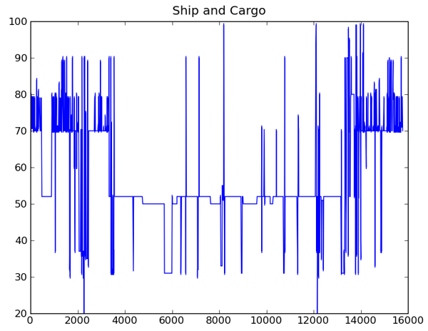
fig2 = plt.figure()
ax = fig2.add_subplot(111)
ax.plot(data['UserID'],data['shipandcargo'], 'o')
ax.set_xlabel('Vessel MMSI')
ax.set_ylabel('Ship and Cargo number')
ax.set_title('Ship and Cargo')
fig2.savefig('ship-shipandcargo.png')
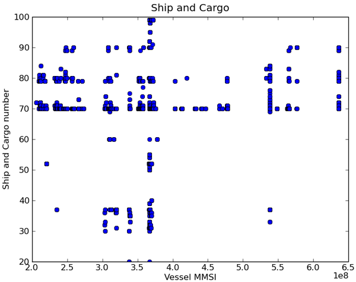
04.02.2009 19:48
Whiteboard to figures
Today was practice with trying to
create clean figures will Illustrator. I am fairly happy with these
results of going from my whiteboard scrawl to figures.
It took me a lot of tries with the mouse to make the storm front...
Just don't count on the above codes until the document is submitted.
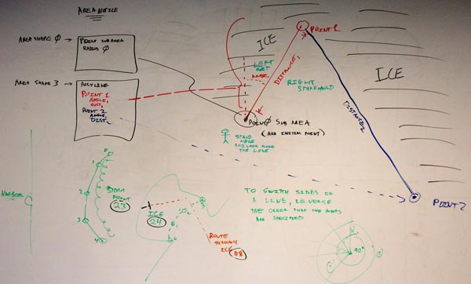
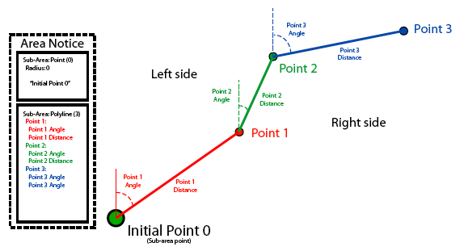
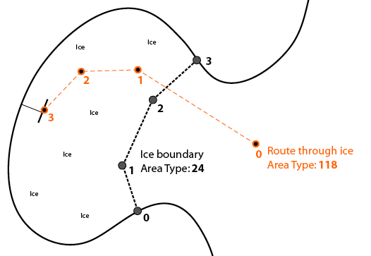
It took me a lot of tries with the mouse to make the storm front...
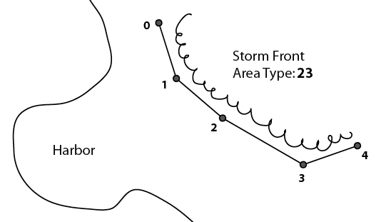
Just don't count on the above codes until the document is submitted.
04.01.2009 16:28
Book your trip to Mars on Expedia
Jim Garnder passed along this link to
me today...
Flight to Mars - Complete Mars Vacation Guide - Expedia Space
Happy April 1st!
Flight to Mars - Complete Mars Vacation Guide - Expedia Space
Happy April 1st!